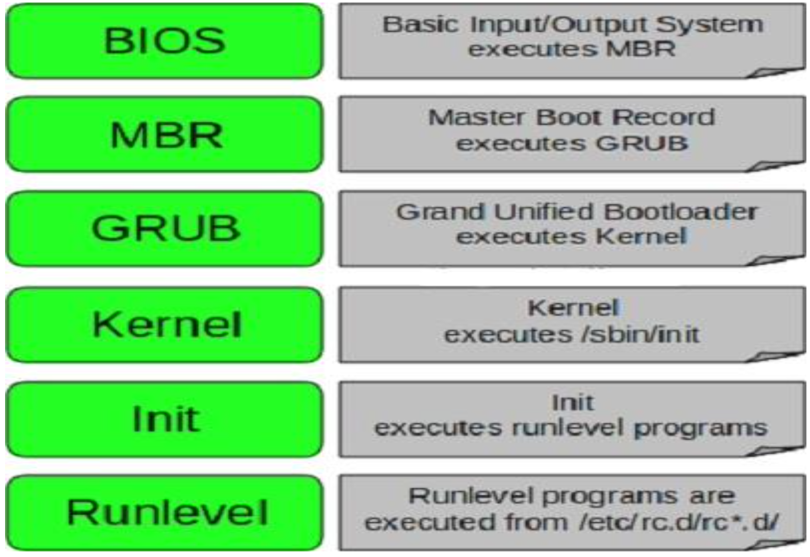

Training
Module 1 - Concepts
What is Linux?
Operating System which sites in the middle of your hardware and users
Unix vs Linux
Unix was first developed for multi-user and multi-tasking in mid 1970 in Bell Labs by ATT. GE and MIT
Then linux was born in 1991 by Linus Torvalds
Linux is mostly free
Linux is open source
Unix is mostly used by Sun as Solaris, HP-UX, AIX etc.
Linux is used by developer communuty or companies (Redhat, CentOs, Debian) etc.
Unix comparitively supports very few File systems
Linux can be installed on a wide variety of computer hardware, ranging from mobile phones, tablets, video game consoles, to mainframes and supercomputers
Module 2 - Download, Install and Configure
Linux Distributions
Redhat
CentOS
Fedora
Suse
Debian
Ubuntu
CentOS vs CentOS Stream
Brief history of CentOS
2004 - Greg Kurtzer forked RHEL to CentOS
2014 - RH took over CentOS
Community Enterprise Operating System
Before Feb 2021:
Fedora > RHEL > CentOS
After Feb 2021:
Fedora > CentOS Stream > RHEL
Linux vs Windows
Linux |
Windows |
|
|---|---|---|
Price Ease Reliability Software Multitasking Security Opensource |
Free Not user-friendly Very reliable, often runs for months or years Mostly enterprise level softwares Best for multi-tasking Very secure Open to public |
$$$ User friendly Often requires reboot Much larger selection of softwares eg office, games, utilities, etc. Multi-tasking is available but with very high cpu or memory resources Somewhat secure Not an open source OS |
Linux Users
US Government Agencies (National, State, Federal, and International)
NASA
Health Care
Bullet trains in Japan runs at the soeed of 150-215m/h
Traffic Control
Financial Institutes eg NYSE
Entertainment industries (cinemas, production houses, etc.)
World e-commerce leaders, including Amazon, eBay, PayPal, and Walmart
Other fortune 500 companies eg Google, IBM, McDonalds, Facebook etc.
Module 3 - System Access and File System
Network Commands
Centos/RHEL 5 or 6 was ifconfig
Centos/RHEL 7 is ip
Centos/RHEL 7.5 and up ifconfig has been deprecated
To use ifconfig in 7.5 use yum install net-tools
Important Things
Linux has super user account called root
root is the most powerful account that can create, modify, delete accounts and make changes to system configuration files
Linux is case-sensitive
ABC is not the same as abc
Avoid using spaces when creating files and directories
Linux kernal is not an OS. It’s a small software within linux OS that takes commands from users and pass them to system hardware or peripherals
Linux is mostly CLI not GUI
Linux is very flexible as compared to other OSs
Linux File System
OS store data on disk drives using a structure called filesystem, consisting of files, directories, and the information needed to access and locate them
There are many different types of filesystems. In general improvements have been made to filesystems with new releases of OS and each new FS has been given a different name. Eg. ext3, ext4, XFS, NTFS, FAT etc.
Linux filesystems store info in a hierarchy of dirs and fiels.
File System Structure

File System Structure and its Description
/boot - contains file that is used by the boot loader (grub.cfg)
/root - root user home directory. It is not the same as /
/dev - system devices (eg. disk cdrom speakers flash drive keyboard)
/etc - configuration files
/bin > / usr/bin - everyday user commands
/sbin > /usr/sbin - system/filesystem commands
/opt - optional addon applications (not part of OS apps)
/proc - running processes (only exist in memory)
/lib > usr/lib - C programming library needed by commands and apps (strace -e open pwd)
/tmp - dir for temp files
/home - dir for users
/var - system logs
/run - system daemons that start very early (eg. systemd and udev) to store runtime files like PID files
/mnt - to mount external filesystem (eg. NFS)
/media - for cdrom mounts
What is Root?
There are 3 types of root on a Linux system
Root account: root is an account or username on Linux machine and is the most powerful account which has access to all commands and files
Root as /: the very first dir of Linux also referred as root directory
Root home directory: the root user account also has a dir located in /root which is called root home dir
File System Paths
There are two paths to navigate to a filesystem
Absolute path
Relative path
An absolute path always begins with a /. This indicates that the path starts at the root directory. An example of an absolute path is cd /var/log/samba
A relative path does not begin with a /. It identifies a location relative to your current position. An example of a relative path is cd /var and cd log cd samba
Directory Listing Attributes

Creating Files and Directories
Creating files
touch
cp
vi
Creating directories
mkdir
Copying Directories
Command to copy a directory
cp
To copy a directory on Linux, you have to execute the cp command with the -R option for recursive and specify the source and destination directories to be copied
cp -R <source_folder> <destination_folder>
Linux File Types
File Symbol |
Meaning |
|---|---|
dash d l c s p b |
Regular file Directory link Special file or device file socket Named pipe Block device |
Finding Files and Directories
Two main commands are useful to find files/directories
find (find . -name “test”)
locate (locate test)
If locate command doesnt output any result, then as rute run updatedb
Also make sure you have mlocate package installed
To check run rpm -qa | grep mlocate
To install run yum install mlocate
Difference Between find and locate
locate uses a prebuilt database, which should be regularly updated, while find iterates over a filesystem to locate files. Thus, locate is much faster than find, but can be inaccurate if the database (can be seen as a cache) is not updated
To update the locate database run updatedb
Changing Password
You should change your initial password as soon as you login
Command = passwd userid
Wildcards
A wildcard is a character that can be used as a substitute for any of a class of characters in a search
* represents zero or more characters
? represents a single character
[] represents a range of characters (ls -ltr *[cd]*)
{} range of fiels to create
backslash as an escape character
^ the beginning of a line
$ the end of a line
Soft and Hard Links
inode = Pointer or number of a file on the hard disk
Soft Link = Link will be removed if file is removed or renamed
Hard Link = Deleting renaming or moving the original file will not affect the hard link
ln (hard link)
ln -s (soft link)

Note: you cannot create a soft or hard link within the same directory with the smae name.
Hard links only work within the same partition
Module 4 - Fundamentals
Commands Syntax
Command options and arguments
Commands typically have the syntax:
command options arguments
Options
Modify the way that a command works
Usually oly consist of a hyphen or dash followed by a single letter
Some commands accept multiple options which can usually be grouoped together after a single hypghen
Arguments:
Most commands are used together with one or more arguments
Some commands assume a default argument if none is supplied
Arguments are optional for some commands and required by others
File Permissions
UNIX is a multi-user system. Every file and directory in your account can be protected from or made accessible to other users by changing its access permissions. Every user has responsibility for controlling access to their files.
Permissions for a file or directory may be restricted to by types
There are 3 types of permissions
r - read
w - write
x - execute (running a program)
Each permission (rwx) can be controlled at three levels
u - user (yourself)
g - group (can be people in the same project)
o - other (everyone in the system)
File or Directory permission can be displayed by running ls -l command
-rwxrwxrwx
Command to change permission
chmod
Remove read rights from group: chmod g-r file
Remove read rights from all (other): chmod a-r file
Remove write rights from user: chmod u-w file
Add read and write rights to user on file: chmod u+rw file
File Permissions using Numeric Mode
Permission to a file and directory can be assigned numerically
chmod ugo+r file
or chmod 444 file

The table below assigns numbers to permissions types
Number |
Permission Type |
Symbol |
|---|---|---|
0 1 2 3 4 5 6 7 |
No Permission Execute Write Execute + Write Read Read + Execute Read + Write Read +Write + Execute |
— –x -w- -wx r– r-x rw- rwx |
chmod 764 file:

File Ownership
There are 2 owners of a file or directory
User and group
Command to change file ownership
chown and chgrp
chown changes the ownership of a file
chgrp changes the group ownership of a file
Recursive ownership change option (cascade)
-R
Access Control List
What is ACL?
Access control list (ACL) provides an additional, more flexible permission mechanism for file systems. It is designed to assist with UNIX file permissions. ACL allows you to give permissions for any user or group to any disc resource.
Use of ACL:
Think of a scenario in which a particular user is not a member of a group created by you but you still want to give some read or write access, how can you do it without making user a member of a group, here comes in picture ACL, CAL helps us to do this trick.
Basically, ACLs are used to make a flexible permission mechanism in Linux.
From Linux man pages, ACLs are used to define more fine-granied discretionary access rights for files and directories
Commands to assign and remove ACL permissions are:
setfacl and getfacl
List of commands for setting up ACL:
to add permission for a user (setfacl -m u:user:rwx /path/to/file)
to add permissions for a group (setfacl -m g:group:rw /path/to/file)
to allow all files or directories to inherit ACL entries from the directory it is within (setfacl -Rm “entry” /’path/to/dir’)
To remove a specific entry (setfacl -x u:user /path/to/file (for a specific user))
To remove all entries (setfacl -b path/to/file (for all users))
Note:
As you assign the ACL permission to a file/directory it adds + sign at the end of the permission
Setting w permission with ACL does not allow to remove a file
Help Commands
There are 3 types of help commands
whatis command
command –help
man command
Tab Completion and Up Arrow
Hitting TAB key completes the available commands, files, or directories
chm TAB
ls j<TAB>
cd Des<TAB>
Hitting up arrow key on the keyboard returns the last command run
Adding Text to Files (Redirects)
3 Simple ways to add text to a file
vi
Redirect command output > or >>
echo > or >>
Input and Output Redirects
There are 3 redirects in Linux
Standard input (stdin) and it has file descriptor number as 0
Standard output (stdout) and it has file descriptor number 1
Standard error (stderr) and it has file descriptor number as 2
Output (stdout) -1
By default when running a command its output goes to the terminal
The output of a command can be routed to a file using > symbol
eg. ls -l > listings
pwd > findpath
If using the same file for additional output or to append to the same file then use >>
eg. ls -la >> listings
echo “Hello World” >> findpath
Input (stdin) -0
Input is used when feeding file contents to a file
eg. cat < listings
mail -s “office memo” contact@calebsargeant.com < momoletter
Error (stderr) - 2
When a command is executed we use a keyboard and that is also considered (stdin -0)
That command output goes on the monitor that outpit is (stdout -1)
If the command produced any error on the screen then it is considered (stderr -2)
We cna use redirects to route errors from the screen
eg. ls -l /root 2> errorfile
telnet localhost 2> errorfile
Standard Output to a File (tee)
tee command is used to store and view (both at the same time) the output of any command
The command is named after the T-splitter used in plumbing. It basically breaks the output of a program so that it can be both displated and saved in a file. It does both the tasks simultaneously, copies the result into the specified file or variables and also displays the result.
Remember -a appends
Pipes
A pipe is used by the shell to connec the output of one command directly to the inout of another file
The symbol for a pipe is the vertical bar (|). The command syntax is:
command 1 [arguments] | command2 [arguments]
File Maintenance Commands
cp
rm
mv
mkdir
rmdir or rm -r
chgrp
chown
File Display Commands
cat
more
less
head
tail
Filters / Text Processors Commands
cut
awk
grep and egrep
sort
uniq
wc
Cut
Cut is a comman d line utility that allows you to cut parts of lines from specified files or piped data and print the result to standard output. It can be used to cut parts of a line by delimiter, byte position, and character
cut filename does not work
cut –version
cut -c1 file - gets the first character from each line
cut -c1,2,4 file - pick and choose character
cut -c1-3 file - list range of characters
cut -c1-3,6-8 file - list specific range of characters
cut -b1-3 file - list byte size
cut -d: -f 6 /etc/passwd - list first 6th column seperated by :
cut -d: -f 6-7 /etc/passwd - list first 6th and 7th column sperated by :
ls -l | cut -c-4 - only print user permissions of files/dir
Awk
awk is a utility/language designed for data extraction. Most of the time it is used to extract fields from a file or from an output.
awk –version - check version
awk ‘{print $1}’ file - list 1st field from a file
ls -l | awk ‘{print $1,$3}’ - list 1st and 3rd field of ls -l output
ls -l | awk ‘{print $NF}’ - last filed of the output
awk ‘/Jerry/ {print}’ file - search for a specific word
awk -F: ‘{print $1}’ /etc/passwd - output only 1st field of /etc/passwd
echo “Hello Tom” | awk ‘{$2=”Adam”; print $0}’ - replace words field words
cat file | awk ‘{$2=”Caleb”; print $0}’ - replace words field words
awk ‘length($0) > 15’ file - get lines that more that 15 byte size
ls -l | awk ‘{if($9 == “caleb”) print $0;}’ - get the field matching caleb in /home/caleb
ls -l | awk ‘{print NF}’
Grep/Egrep
What is grep?
the grep command which stands for “global regular expression print”, processes text line by line and prints any lines which match a specified pattern
grep –version or grep –help
grep keyword file - search for a keyword from a file
grep -c keyword file - search for a keyword and count
grep -i keyword file - search for a keyword ignore case-sensitive
grep -n keyword file - display the matched lines and their line numbers
grep -v keyword file - display everything but keyword
grep keyword file | awk ‘{print $1}’ - search for a keyword and then only give 1st field
ls -l | grep Desktop - search for a keyword and then only give 1st field
egrep -i “keyword|keyword2” file - search for 2 keywords
Sort/Uniq
What are sort and uniq commands?
Sort command sorts in alphabetical order
Uniq command filters out the repeated or duplicate lines
sort –version or sort –help - check version or help
sort file - sorts in alphabetical order
sort -r file - sorts in reverse alphabetical order
sort -k2 file - sort by field number
uniq file - removes duplicates
sort file | uniq - always sort first before using uniq their line numbers
sort file | uniq -c - sort first then uniq and list count
sort file | uniq -d - only show repeated lines
Wc
What is wc command?
The command reads either standard input or a list of files and generates: newline count, word count, and byte count
wc –version or wc –help - check version or help
wc file - check file line count, word count and byte count
wc -l file - get the number of lines in a file
wc -w file - get the number of words in a file
wc -b file - get the number of bytes in a file
wc DIRECTORY - not allowed
ls -l | wc -l - number of files
grep keyword | wc -l - number of keyword lines
Compare Files
diff (line by line)
cmp (byte by byte)
Compress and un-Compress Files
tar
gzip
gzip -d or gunzip
Truncate File Size
The linux truncate command is often used to shrink or extend the size of a file to the specified size
Command
truncate -s 10 filename
Combining and Splitting Files
Multiple files can be combined into one and
One file can be split into multiple files
cat file1 file2 file3 > file4
split file4
e.g. split -l 300 file.txt childfile - split file.txt into 300 lines per file and output to childfileaa, childfileab, and childfileac
Linux vs Windows Commands
Command Description |
Windows |
Linux |
|---|---|---|
Listing of a directory Rename a file Copy a file Move a file Clear screen Delete file Compare contents of files Search for a word/string in a file Display command help Displays your location in the file system Displays the time |
dir ren copy move cls del fc find command /? chdir time |
ls -l mv cp mv clear rm diff grep man command pwd date |
Module 5 - System Administration
Linux File Editor (vi)
A text editor is a program which enables you to create and manipulate data (text) in a Linux file
There are several standard text editors available on most Linux systems
vi - Visual editor
ed - Standard line editor
ex - Extended line editor
emacs - A full screen editor
pico - Begginers editor
vim - Advanced version of vi
Our editor = vi (available in almost every Linux distribution)
vi supplies commands for:
inserting and deleting text
replacing text
moving around the file
finding and substituting strings
cutting and pasting text
Most common keys:
i - insert
Esc - escape out of any mode
r - replace
d - delete
:q! - quit without savinbg
:wq! - quit and save
Difference Between vi and vim Editor
As far as functionality is concerned, both editors work in the same manner. Which editor you choose is a matter of personal choice. Some people recommend learningh the vim editor instead of the vi editor. Due to added features, learning and using vim editor is much easier than the vi editor.
Since vim is based on the vi, when you will learn how to use the vim editor, you will automaticall learn how to use the vi editor
vim has all the features as vi with some excellent addition
There’s also a comprehensive help system and lots of customization options available.

There are many websites taht offer free vim interactive training
Sed Command
Replace a string in a file with a newstring
sed ‘s/Kenny/Lenny/g’ file - output to console
sed -i “s/Kenny/Lenny/g” file - make changes to file
sed ‘s/Costanza//g’ - remove the word Costanza
Find and delete a line
sed ‘/Caleb/d’ file
Remove empty lines
sed ‘/^$/d’
Remove the first or n lines in a file
sed ‘1d’ file - delete first line
sed ‘1,2d’ file - delete first 2 lines
To replace tabs with spaces
sed ‘s/t/ /g’
Show defined lines from a file
sed -n 12,18p file - show only lines 12 to 18
sed 12,18d file - show all but lines 12 to 18
sed G file - add a linebreak to every line
sed ‘8!s/Caleb/C/g’ file - change all lines except line 8
Substitute wining vi editor
:%s/Caleb/Peter/
User Account Management
Commands:
useradd
groupadd
userdel
groupdel
usermod
Files:
/etc/passwd
/etc/group
/etc/shadow
Example:
useradd -g superheros -s /bin/bash -c "user description" -m -d /home/spiderman spiderman
Enable Password Aging
chage [-m mindags] [-M maxdays] [-d lastday] [-I inactive] [-E expiredate] [-W warndays] user
File = /etc/login.def
PASS_MAX_DAYS 99999
PASS_MIN_DAYS 0
PASS_MIN_LEN 5
PASS_WARN_AGE 7
Check /etc/shadow for the position:
-d = 3. Last password change (lastchanged): Days since Jan 1, 1970 that password was last changed
-m = 4. Minimum: the minimum number of days requred between password changes i.e. the number of days left before the user is allowed to change his/her password
-M = 5. Maximum: the maximum number of days the password is valid (after that the user is forced to change the password)
-W = 6. Warn: The number of days before password is set to expire that the user is warned that the password must be changed
-I = 7. Inactive: The number of days after password expires that the account is disabled
-E = 8. Expire: days since Jan 1, 1970 that account is disabled i.e. an absolute date specifying when the login may no longer be used
Switch Users and Sudo Access
Commands:
su - username
sudo command
visudo
File
/etc/sudoers
Monitor Users
who
last
w
finger
id.
Talking to Users
users
wall
write
Linux Account Authentication
Type of Accounts
Local accounts
Domain/Directory accounts
Windows = active directory
Difference between AD, LDAP, IDM, WinBIND, OpenLDAP, etc.
Active Directory = Microsoft
IDM = Identity Manager (Redhat)
WinBIND = Used in Linux to communicate with Windows (samba)
OpenLDAP (open source)
IBM Directory Server
JumpCloud
LDAP = Lightweight Directory Access Protocol (not a package, but a protocol)
System Utility Commands
date
uptime
hostname
uname
which
cal
bc
Processes and Jobs
Application = Service
Script
Process
Daemon
Threads
Job
systemctl or service
ps
top
kill
crontab
at
Systemctl Command
systemctl command is a new tool to control system services
It’s available in version 7 and later it replaces the service command
Usage example:
systemctl start|stop|status servicename.service
systemctl enable servicename.service
systemctl restart|reload servicename.service
systemctl list-units –all
The output has the following columns:
UNIT: the systemd unit name
LOAD: Whether the unit’s configuration has been parsed by systemd. The configuration of loaded units is kept in memory
ACTIVE: A summary state about whether the unit is active. This usually a fairly basic way to tell if the unit has started successfully or not.
SUB: this is a lower-level state that indicates more detailed information about the unit. THis often varies by unit type, state, and the actual method in which the unit runs.
DESCRIPTION: A short textual description of what the unit is/does.
To add a service under systemctl management:
Create a unit file in /etc/systemd/system/servicename.service
To control system with systemctl
systemctl poweroff
systemctl halt
systemctl reboot
ps Command
ps command stands for process status and it displays all the currently running processes in the Linux system
Usage examples:
ps = shows the processes of the current shell
PID = the unique process ID
TTY = terminal type that the user logged in to
TIME = amount of CPU in mins and secs that the prcess has been running
CMD = name of the command
ps -e = shows all running processes
ps aux = shows all running processes in BSD format
ps -ef = shows all running processes in full format listing (most commonly used)
top Command
top command is used to show the Linux process and it provides a real-time view of the running system
This command shows the summary information of the system and the list of process or threads that are currently managed by the Linux Kernal
When the top command is executed then it goes into interactive mode and you can exit using q
Usage: top
PID: shows task’s unique process ID
USER: usertname of owner of task
PR: The PR field shows the scheduling priority of the process from the perspective of the kernel
NI: Represents a Nice Value of task. A negative nice value implies higher priority, and positive Nice value means lower priority.
VIRT: Total virtual memory used by the task
RES: Memory consumed by the process in RAM
SHR: Represents the amount of shared memory used by a task
S: This field shows the process state in the single-letter form
%CPU: represents the CPU usage
%Mem: shows the memory usage of task
TIME+: CPU Time, the smae as TIME, but reflecting more granualarity through hundredths of a second
top -u caleb = shows tasks/processes by user owned
top then press c = shows commands absolute path
top then press k = kill a process by PID within top session
top the M and P = to sort all linux running processes by Memory usage
kill Command
kill command is used to terminate process manually
It sends a signal which ultimately terminates or kills a particular process or group of processes
Usage: kill [OPTION] [PID]
kill -l = to get a list of all signal names or signal numbers
Most used signals are:
kill PID = kill a process with default signal
kill -1 = restart
kill -2 = interupt from the keyboard just like ctrl C
kill -9 = forcefully kill the process
kill -15 = kill a process gracefully
Other similar kill commands are:
killall
pkill
crontab Command
Crontab command is used to schedule tasks
Usage:
crontab -e = edit the crontab
crontab -l = list the crontab entries
crontab -r = remove the crontab
crond = crontab daemon/service that manages scheduling
systemctl status crond = manage the crond service

at Command
at command is like crontab which allows you to schedule jobs only once
When the command command is run it will enter interactive mode and you can get out by pressing ctrl d
Usage:
at HH:MM PM = schedule a job
atq = list the at entries
atrm # = remove at entry
atd = at daemon/service that manages scheduling
systemctl status atd = to manage the atd service
Other future scheduling format:
at 2:45 am 101621
at 4pm + 4 days
at now + 5 hours
at 80:00 am sun
at 10:00 am next month
Additional Cron Jobs
By default there are 4 different types of cronjobs
Hourly
Daily
Weekly
Monthly
All the above crons are setup in
/etc/cron._ (directory)
The timing for each are set in
/etc/anacrontab – except hourly
For hourly
/etc/cron.d/0hourly
Process Management
Background = ctrl-z, jobs and bg
Foreground = fg
Run process even after exit = nohup process &
OR = nohub process > /dev/null 2>&1 &
Kill a process by name = pkill
Process priority = nice (e.g. nice -n 5 process)
the niceness scale goes from -20 to 19. The lower the number more priority that task gets
Process monitoring = top
List process = ps
System Monitoring
top
df
dmesg
iostat 1
netstat (netstat -rnv)
free
cat /proc/cpuinfo
cat /proc/meminfo
Log Monitoring
Another and most important way of system administration is log monitor
Log Directory = /var/log
boot
chronyd = NTP
cron
maillog
secure
messages
httpd
System Maintenance Commands
shutdown
init
reboot
halt
Changing System Hostname
hostnamectl - set-hostname newhostname
Version 7 = edit /etc/hostname
version 6 = edit /etc/sysconfig/network
Finding System Information
cat /etc/redhat-release
uname -a
dmidecode
System Architecture
Differences between a 32-bit and 64-bit CPU
A big difference between 32-bit processors and 64-bit processors is the number of calculations per second they can perform, which affects the speed at which they can complete tasks. 64-bit processors can come in dual core, quad core, six core, and eight core versions for home computing. Multiple cores allow for an increased number of calculations per second that can be performed, which can increase the processing power and help make a computer run faster. Software programs that require many calculations to function smoothly can operate faster and more efficiently on the multi-core 64-bit processors.
Linux = arch
Windows = My Computer -> Properties
Terminal Control Keys
Several key combinations on your keyboard usually have a special effect on the terminal
These “control” (CTRL) keys are accomplished by holding the CTRL key while typing the second key
For example, CTRL-c means to hold the CTRL key while typing the letter “c”
The most common control keys are listed below:
CTRL-u = erase everything you’ve typed on the command line
CTRL-c = stop/kill a command
CTRL-z = suspend a command
CTRL-d = exit from an interactive program (signals end of data)
Terminal Commands
clear (clears your screen)
exit (exit out of the shell, terminal or user session)
script (the script command stores terminal activites in a log file that can be named by a user, when a name is not provided by a user, the default file name, typescript is used)
Recover Root Password
restart your computer
edit grub
change password
reboot
look for “ro” at the bottom and replace with:
rw init=/systoot/bin/sh
ctrl x
chroot /sysroot
passwd root
exit
reboot
SOS Report
What is SOS Report?
Collect and package diagnostic and support data
Package name
sos-version
Command
sosreport
Environment Variables
What are environment variables?
AN environment variable is a dynamic-named value that can affect the way running processes will behave on a computer. THey are part of the environment in which a process runs
In simple words, a set of defined rules and values to build an environment
To view all environment variables
printenv or env
To view all environment variables
echo $SHELL
To set the environment variables
export TEST=1
echo $TEST
To set environment variable permanently
vi .bashrc
TEST=123
export TEST
To set global environment variable permanently
vi /etc/profile` or /etc/bashrc
Test=123
export TEST
Special Permissions
All permissions on a file or directory are referred as bits
There are additional permissions in Linux:
setuid: bit tells Linux to run a program with the effective user id of the owner instead of the executor (eg passwd command) -> /etc/shadow
setgid: bit tells LInux to run a program with the effective group id of the owner instead of the executor (eg locate or wall command). Please note that this bit is present for only files which have executable permissions
sticky bit: a bit set on files/directories that allows only the owner or root to delete those files
To assign special permissions at the user level:
chmod u+s xyz.sh
To assign special permissions at the group level
chmod g+s xyz.sh
To remove special permissions at the user or group level
chmod u-s xyz.sh
chmod g-s xyz.sh
To find all executables in Linux with setuid and setgid permissions
find / -perm /6000 -type f
Sticky Bit - it is assigned to the last bit of permissions
-rwx rwx rwt
Please note that these bits work on c programming executables not on bash shell scripts
Module 6 - Shell Scripting
Linux Kernal
What is a Kernel?
interface between hardware and software
Introduction to Shell
What is a Shell?
it’s like a container
Interface between users and Kernel/OS
CLI is a Shell
FInd your Shell
echo $0
Available Shells “cat /etc/shells”
Your Shell? /etc/passwd
Windows GUI is a shell
Linux KDE GUI is a shell
Linux sh, bash etc. is a shell
Types of Shells
Gnome
KDE
sh
bash
csh and tcsh
ksh
Shell Scripting
What is a Shell Script?
A shell script is an executable file containing multiple shell commands that are executed sequentially. THe file can contain:
Shell (#!/bin/bash)
Comments (# comments)
Commands (echo, cp, grep, etc.)
Statements (if, while, for, etc.)
Shell script should have executable permissions (eg. -rwx r-x r-x)
Shell script has to be called from absolute path (eg. /home/userdir/script.bash)
If called from current location then ./script.bash
Basic Shell Scripts
Output to screen using “echo”
Creating tasks
Telling your id, current location, your files/directories, system info
Creating directories and files
Output to a file “>”
FIlters/Text processors through scripts (cut, awk, grep, sort, uniq, wc)
Input/Output
Create script to take input from the user
read
echo
if-then Scripts
If then statement
If this happens = do this
Otherwise = do that
For Loop Scripts
For loops
Keep running until specified number variable
Variable = blue, red, green (then run the script 3 times for each color)
do-while Scripts
do while
the while statement continually executes a block of statements while a particular condition is true or met
eg. run a script untl 2pm
Case Statement Scripts
case
If option a is selected = do this
If option b is selected = do this
etc.
Check Remote Servers Connectivity
#!/bin/bash
ping -c1 192.168.1.1
if [ $? -eq 0 ]
then
echo OK
else
echo NOT OK
fi
###Change the IP to 192.168.1.235
###Don't show the output
ping -c1 192.168.1.1 &> /dev/null
if [ $? -eq 0 ]
then
echo OK
else
echo NOT OK
fi
###Define variable
#!/bin/bash
hosts="192.168.1.1"
ping -c1 $hosts &> /dev/null
if [ $? -eq 0 ]
then
echo $hosts OK
else
echo $hosts NOT OK
fi
###Change the IP to 192.168.1.235
###Multiple IPs
#!/bin/bash
IPLIST="path_to_the_Ip_list_file"
for ip in $(cat $IPLIST)
do
ping -c1 $ip &> /dev/null
if [ $? -eq 0 ]
then
echo $ip ping passed
else
echo $ip ping failed
fi
done
Aliases
Aliases is a very popular command that is used to cut down on lengthy and repetitive commands
alias ls=”ls -al”
alias pl=”pwd; ls”
alias tell=”whoami; hostname; pwd”
alias dir=”ls -l | grep ^d”
alias lmar=”ls -l | grep Mar”
alias wpa=”chmod a+w”
alias d=”df -h | awk ‘{print $6}’ | cut -c1-4”
Creating User or Global Aliases
User = Applies only to a specific user profile
Global = Applies to everyone who has account on the system
User = /home/user/.bashrc
Global = /etc/bashrc
Shell History
command history
The file where history of your shell commands saved = /home/yourname/.bash_history
Module 7 - Networking, Services and System Updates

Internet Access to VM
Open Virtualbox Manager
Select the machine you cannot get internet on in the left pane
Click the Settings button in the top menu
Click Network in the left pane in the settings window
Switched to Bridged Adaptor in the Attached to drop-down menu * Hit OK to save your changes
Start your VM
Network Components
IP
Subnet mask
Gateway
Static vs. DHCP
Interface
Interface MAC.
Network Files and Commands
Interface Detection
Assigning an IP address
Interface configuration files
/etc/nsswitch.conf
/etc/hostname
/etc/sysconfig/network
/etc/sysconfig/network-scripts/ifcfg-nic
/etc/resolv.conf
Network Commands
ping
ifconfig
ifup or ifdown
netstat
tcpdump
NIC Information
NIC = Network Interface Card
Example: ethtool enp0s3
Other NICs
lo = The loopback device is a special interface that your computer uses to communicate with itself. It is used mainly for diagnostics and troubleshooting, and to connect to servers running on the local machine
virb0 = The virbr0, or “Virtual Bridge 0” interface is used for NAT (Network Address Translation). Virtual environments sometimes use it to connect to the outside network
NIC Bonding
NIC(Network Interface Card) bonding is also known as Network bonding. It can be defined as the aggregation or combination of multiple NIC into a single bond interface.
Its main purpose is to provide high availability and redundancy
NIC Bonding Procedure
modprobe bonding
modinfo bonding
Create /etc/sysconfig/network-scripts/ifcfg-bond0
Edit /etc/sysconfig/network-scripts/ethernet1
Edit /etc/sysconfig/network-scripts/ethernet2
Restart network = systemctl restart network
Net Network Utilities
Getting started with NetworkManager
Network configuration methods
nmtui
nmcli
nm-connection-editor
GNOME Settings.
Getting started with NetworkManager
NetworkManager is a service that provides set of tools designed specifically to make it easier to manage the networking configuration on Linux systems and is the default network management service on RHEL 8
It makes network management easier
It provides easy setup of connection to the user
NetworkManager offers management through different tools such as GUI, nmtui, and nmcli.
Network configuration methods
nmcli - Short for network manager command line interface. This tool is useful when access to a graphical environment is not available and can also be used within scripts to make network configuration changes
nmtui - Short for network manager text user interface. This tool can be run within any terminal window and allows changes to be made by making menu selections and entering data
nm-connection-editor - A full graphical management tool providing access to most of the NetworkManager configuration options. It can only be accessed through the desktop or console
GNOME Settings - The network screen of the GNOME desktop settings application allows basic network management tasks to be performed
System Updates and Repos
yum (CentOS), apt-get (other Linux)
rpm (Redhat Package Manager)
Advanced Package Management
Installing packages
Upgrading
Deleting
View package details information
Identify source or location information
Packages configuration files
Download Files or Apps
Linux = wget
Example in Linux:
Why??? Most of the servers in corporate environment do NOT have internet access
curl and ping Commands
Linux = curl
Linux = ping
Example in Linux:
curl -O http://website.com/filename
ping www.google.com
FTP - File Transfer Protocol
The File Transfer Protocol is a standard network protocol used for the transfer of computer files between a client and server on a computer network. FTP is built on a client-server model architecture using separate control and data connections between the client and the server. (Wikipedia)
Protocol = Set of rules used by computers to communicate
Default FTP Port = 21
Install and Configure FTP on the remote server
# Become root
#rpm–qa|grepftp
# ping www.google.com
# yum install vsftpd
# vi /etc/vsftpd/vsftpd.conf (make a copy first)
## Find the following lines and make the changes as shown below:
## Disable anonymous login ##
anonymous_enable=NO
## Uncomment ##
ascii_upload_enable=YES
ascii_download_enable=YES
## Uncomment - Enter your Welcome message - This is optional ##
ftpd_banner=Welcome to UNIXMEN FTP service.
##Addattheendofthis file##
use_localtime=YES
# systemctl start vsftpd
# systemctl enable vsftpd
# systemctl stop firewalld
# systemctl disable firewalld
# useradd caleb (if the user does not exist).
Install FTP client on the client server
# Become root
# yum install ftp
# su – caleb
touch caleb
Commands to transfer file to the FTP server:
ftp 192.168.1.x
Enter username and password
bi
hash
put caleb
bye.
SCP - Secure Copy Protocol
The Secure Copy Protocol or “SCP” helps to transfer computer files securely from a local to a remote host. It is somewhat similar to the File Transfer Protocol “FTP”, but it adds security and authentication
Protocol = Set of rules used by computers to communicate
Default SCP Port = 22 (same as SSH)
SCP commands to transfer file to the remote server:
Login as yourself (caleb)
touch jack
scp jack caleb@192.168.1.x:/home/caleb * Enter username and password
rsync - Remote Synchronization
rsync is a utility for efficiently transferring and synchronizing files within the same computer or to a remote computer by comparing the modification times and sizes of files
rsync is a lot faster than ftp or scp
This utility is mostly used to backup the files and directories from one server to another
Default rsync Port = 22 (same as SSH)
Basic syntax of rsync command
# rsync options source destination
Install rsync in your Linux machine (check if it already exists)
# yum install rsync (On CentOS/Redhat based systems)
# apt-get install rsync (On Ubuntu/Debian based systems)
rsync a file on a local machine
$ tar cvf backup.tar . (tar the entire home directory (/home/caleb)
$ mkdir /tmp/backups
$ rsync -zvh backup.tar /tmp/backups/
rsync a directory on a local machine
$ rsync -azvh /home/caleb /tmp/backups/
rsync a file to a remote machine
$ mkdir /tmp/backups (create /tmp/backups dir on remote server)
$ rsync -avz backup.tar caleb@192.168.1.x:/tmp/backups
rsync a file from a remote machine
$ touch serverfile
$ rsync -avzh caleb@192.168.1.x:/home/caleb/serverfile /tmp/backups
System Upgrade/Patch Management
Two type of upgrades
Major version = 5,6,7
Minor version = 7.3, 7.4
example: yum update -y
Create Local Repository
Command: createrepo
SSH and Telnet
Telnet = Un-secured connection between computers
SSH = Secured
Two type of packages for most of the services
Client package
Server package
SSH Without a Password
SSH is a secure way to login from host A to host B
Repetitive tasks require login without a password
DNS - Domain Name System
Purpose?
Hostname to IP (A Record)
IP to Hostname (PTR Record)
Hostname to Hostname (CNAME Record)
Files
/etc/named.conf
/var/named
Service
systemctl restart named
Download, Install and Configure DNS
Create a snapshot of your virtual machine
Setup:
Master DNS
Secondary or Slave DNS
Client
Domain Name = lab.local
IP address = My local IP address on enp0s3
Install DNS package
yum install bind bind-utils –y
ConfigureDNS(Summary)
Modify /etc/named.conf
Create two zone files (forward.lab and reverse.lab)
Modify DNS file permissions and start the service
Revert back to snapshot
Hostname/IP Lookup
Commands used for DNS lookup
nslookup
dig
NTP
Purpose? Time synchronization
File = /etc/ntp.conf
Service = systemctl restart ntpd
Command = ntpq
chronyd
Purpose? = Time synchronization
Package name = chronyd
Configuration file = /etc/chronyd.conf
Log file = /var/log/chrony
Service = systemctl start/restart chronyd
Program command = chronyd.
New System Utility Command (timedatectl)
The timedatectl command is a new utility for RHEL/CentOS 7/8 based distributions, which comes as a part of the systemd system and service manager
It is a replacement for old traditional date command
Thetimedatectl command shows/change date, time, and timezone
It synchronizes the time with NTP server as well
You can either use chronyd or ntpd and make the ntp setting in timedatectl as yes
Or you can use systemd-timesyncd daemon to synchronize time which is a replacement for ntpd and chronyd
Please note:
Redhat/CentOS does not provide this daemon in its standard repo. You will have to download it separately.
To check time status
timedatectl
To view all available time zones
timedatectl list-timezones
To set the time zone
timedatectl set-timezone “America/New_York“
To set date
timedatectl set-time YYYY-MM-DD
To set date and time
timedatectl set-time ‘2015-11-20 16:14:50’
To start automatic time synchronization with a remote NTP server
timedatectl set-ntp true.
Sendmail
Purpose? Send and receive emails
Files
/etc/mail/sendmail.mc
/etc/mail/sendmail.cf
/etc/mail
Service
systemctl restart sendmail
Command
mail –s “subject line” email@mydomain.com
Sendmail is a program in Linux operating systems that allows systems administrator to send email from the Linux system
It uses SMTP (Simple Mail Transfer Protocol)
SMTP port = 25
It attempts to deliver the mail to the intended recipient immediately and, if the recipient is not present, it queues messages for later delivery.
Sendmail installation and configuration
# su – (Login as root)
# rpm –qa | grep sendmail (verify if it is already installed) * # yum install sendmail sendmail-cf
# vi /etc/mail/sendmail.mc
# systemctl start sendmail
# systemctl enable sendmail
# systemctl stop firewalld
# systemctl disable firewalld
Web Server
Purpose= Serve web pages
Service or Package name = httpd
Files
/etc/httpd/conf
/httpd.conf
/var/www/html/index.html
Service
systemctl restart httpd
systemctl enable httpd
Log Files = /var/log/httpd/
Central Logger (rsyslog)
Purpose = Generate logs or collect logs from other servers
Service or package name = rsyslog
Configuration file = /etc/syslog.conf
Service
systemctl restart rsyslog
systemctl enable rsyslog
Network File System
Purpose = Share files or directories (filesystem)
Service or package name = nfs-utils
Configuration file
/etc/fstab
/etc/exports
/etc/sysconfig/nfs
Service
systemctl restart nfs-server
systemctl enable nfs-server
Linux OS Hardening
User Account
Remove un-wanted packages
Stop un-used Services
Check on Listening Ports
Secure SSH Configuration
Enable Firewall (iptables/firewalld)
Enable SELinux
Change Listening Services Port Numbers
Keep your OS up to date (security patching)
OpenLDAP Installation
What is OpenLDAP?
OpenLDAP Service
slapd
Start or stop the service
systemctl start slapd
systemctl enable slapd
Configuration Files
/etc/openldap/slapd.d
Trace Network Traffic (traceroute)
The traceroute command is used in Linux to map the journey that a packet of information undertakes from its source to its destination. One use for traceroute is to locate when data loss occurs throughout a network, which could signify a node that’s down.
Because each hop in the record reflects a new server or router between the originating PC and the intended target, reviewing the results of a traceroute scan also lets you identify slow points that may adversely affect your network traffic.
Example
# traceroute www.google.com
SSH Keys
Two reasons to access a remote machine
Repetitive logins
Automation through scripts
Keys are generated at user level
Step 1 — Generate the Key
# ssh-keygen
Step 2 — Copy the Key to the server
# ssh-copy-id root@192.168.1.x
Step 3 — Login from client to server # ssh root@192.168.1.x
# ssh –l root 192.168.1.x
Cockpit
Cockpit is a server administration tool sponsored by Red Hat, focused on providing a modern-looking and user-friendly interface to manage and administer servers
Cockpit is the easy-to-use, integrated, glanceable, and open web-based interface for your servers
The application is available in most of the Linux distributions such as, CentOS, Redhat, Ubuntu and Fedora
It is installed in Redhat 8 by default and it is optional in version 7
It can monitor system resources, add or remove accounts, monitor system usage, shut down the system and perform quite a few other tasks all through a very accessible web connection
- Check for network connectivity
ping www.google.com
- Install cockpit package as root
yum/dnf install cockpit –y (For RH or CentOS)
apt-get install cockpit (For Ubuntu)
Start and enable the service
systemctl start|enable cockpit
Check the status of the service
systemctl status cockpit
Access the web-interface
Firewall
What is Firewall
A wall that prevents the spread of fire
When data moves in and out of a server its packet information is tested against the firewall rules to see if it should be allowed or not
In simple words, a firewall is like a watchman, a bouncer, or a shield that has a set of rules given and based on that rule they decide who can enter and leave
There are 2 type of firewalls in IT
Software = Runs on operating system
Hardware = A dedicated appliance with firewall software
Firewalld works the same way as iptables but of course it has it own commands
firewall-cmd
It has a few pre-defined service rules that are very easy to turn on and off
Services such as: NFS, NTP, HTTPD etc.
Firewalld also has the following:
Table
Chains
Rules
Targets
You can run one or the other
iptables or firewalld
Make sure iptables is stopped, disabled and mask
systemctl stop iptables
systemctl disable iptables
systemctl mask iptables
Now check if filewalld package is installed
rpm –qa | grep firewalld
Start firewalld
systemctl start/enable firewalld
Check the rule of firewalld
firewall-cmd –list-all
Get the listing of all services firewalld is aware of:
firewall-cmd –get-services
To make firewalld re-read the configuration added
firewall-cmd –reload
The firewalld has multiple zone, to get a list of all zones
firewall-cmd –get-zones
To get a list of active zones
firewall-cmd –get-active-zones
To get firewall rules for public zone
firewall-cmd –zone=public –list-all
firewall-cmd –list-all
All services are pre-defined by firewalld. What if you want to add a 3rd party service
/usr/lib/firewalld/services/allservices.xml
Simply cp any .xml file and change the service and port number
To add a service (http)
firewall-cmd –add-service=http
To remove a service
firewall-cmd –remove-service=http
To reload the firewalld configuration
firewall-cmd –reload
To add or remove a service permanently
firewall-cmd –add-service=http –permanent
firewall-cmd –remove-service=http –permanent
To add a service that is not pre-defined by firewalld
/usr/lib/firewalld/services/allservices.xml
Simply cp any .xml file sap.xml and change the service and port number (32)
systemctl restart firewalld
firewall-cmd –get-services (to verify new service)
Firewall-cmd –add-service=sap
To add a port
firewall-cmd –add-port=1110/tcp
To remove a port
firewall-cmd –remove-port=1110/tcp
To reject incoming traffic from an IP address
firewall-cmd –add-rich-rule=’rule family=”ipv4” source address=“192.168.0.25” reject’
To block and unblock ICMP incoming traffic
firewall-cmd –add-icmp-block-inversion
firewall-cmd –remove-icmp-block-inversion
To block outgoing traffic to a specific website/IP address
host -t a www.facebook.com = find IP address
firewall-cmd –direct –add-rule ipv4 filter OUTPUT 0 -d 31.13.71.36 -j DROP
Tune System Performance
Linux system comes fined tunned by default when you install, however there are a few tweaks that can be done based on system performance and application requirements
Optimize system performance by selecting a tuning profile managed by the tuned daemon
Prioritize or de-prioritize specific processes with the nice and renice commands
What is tuned?
Tuned pronounced as tune-d
Tune is for system tuning and d is for daemon
It is systemd service that is used to tune Linux system performance
It is installed in CentOS/Redhat version 7 and 8 by default
tuned package name is tuned
The tuned service comes with pre-defined profiles and settings (List of profile will be discussed in the next page)
Based on selected profile the tuned service automictically adjust system to get the best performance. E.g. tuned will adjust networking if you are downloading a large file or it will adjust IO settings if it detects high storage read/write
The tuned daemon applies system settings when the service starts or upon selection of a new tuning profile.
Check if tuned package has been installed
rpm –qa | grep tuned
Install tuned package if NOT installed already
yum install tuned
Check tuned service status
systemctl status|enable|start tuned
systemctl enable tuned (To enable at boot time)
Command to change setting for tuned daemon
tuned-adm
To check which profile is active
tuned-adm active
To list available profiles
tuned-adm list.
To change to desired profile
tuned-adm profile profile-name
Check for tuned recommendation tuned-adm recommend
Turn off tuned setting daemon tuned-adm off
Change profile through web console
Login to https://192.168.1.x:9090
Overview → Configuration → Performance profile
Another way of keeping your system fine-tuned is by prioritizing processes through nice and renice command
If a server has 1 CPU then it can execute 1 computation/process at a time as they come in (first come first served) while other processes must wait
With nice and renice commands we can make the system to give preference to certain processes than others
This priority can be set at 40 different levels
The nice level values range from -20 (highest priority) to 19 (lowest priority) and by default, processes inherit their nice level from their parent, which is usually 0.
To check process priority = top
Nice value is a user-space and priority PR is the process’s actual priority that use by Linux kernel. In Linux system priorities are 0 to 139 in which 0 to 99 for real time and 100 to 139 for users
Process priority can be viewed through ps command as well with the right options $ ps axo pid,comm,nice,cls –sort=-nice
To set the process priority
nice –n # process-name
e.g. nice –n -15 top
To change the process priority renice –n # process-name
e.g. renice –n 12 PID.
Containers
What is a Container?
The term container and the concept came from the shipping container
These containers are shipped from city to city and country to country
No matter which part of the world you go to, you will find these containers with the exact same measurements
Because around the world all docks, trucks, ships and warehouses are built to easily transport and store them
Then came the container technology which allowed developers or programmer to test and build applications on any computer just by putting it in a container (bundled in with the software code, libraries and configuration files) and then run on another computer regardless of its architecture
You can move the application anywhere without moving its OS just like moving the actual physical container anywhere that would fit on any dockyard, truck, ship or warehouse
An OS can run single or multiple containers at the same time
What are the Container Software?
Docker is the software used to create and manage containers
Just like any other package, docker can be installed on your Linux system and its service or daemon can be controlled through native Linux service management tool
Podman is an alternative to docker
Docker is not supported in RHEL 8
It is daemon less, open source, Linux-native tool designed to develop, manage, and run containers.
Getting Familiar with Redhat Container Technology
Red Hat provides a set of command-line tools that can operate without a container engine, these include:
podman - for directly managing pods and container images (run, stop, start, ps, attach, etc.)
buildah - for building, pushing, and signing container images
skopeo - for copying, inspecting, deleting, and signing images
runc - for providing container run and build features to podman and buildah
crun - an optional runtime that can be configured and gives greater flexibility, control, and security for rootless containers.
Getting Familiar with podman Container Technology
When you hear about containers then you should know the following terms as well
images – containers can be created through images and containers can be converted to images
pods – Group of containers deployed together on the host. In the podman logo there are 3 seals grouped together as a pod.
Building, Running, and Managing Containers
To install podman
yum/dnf install podman –y
yum install docker –y (For dockers)
Creating alias to docker
alias docker=podman Check podman version
podman –v
Getting help
podman -–help or man podman
Check podman environment and registry/repository information
podman info (If you are trying to load a container image, then it will look at the local machine and then go through each registry by the order listed)
To search a specific image in repository.
podman search httpd
To list any previously downloaded podman images
podman images
To download available images
podman pull docker.io/library/httpd
podman images (Check downloaded image status)
To list podman running containers
podman ps
To run a downloaded httpd containers
podman run -dt -p 8080:80/tcp docker.io/library/httpd (d=detach, t=get the tty shell, p=port)
podman ps or Check httpd through web browser
To view podman logs.
podman logs –l
To stop a running container
podman stop con-name (con-name from podman ps command)
podman ps (To list running containers)
To run a multiple containers of httpd by changing the port #
podman run -dt -p 8081:80/tcp docker.io/library/httpd
podman run -dt -p 8082:80/tcp docker.io/library/httpd
podman ps
To stop and start a previously running container
podman stop|start con-name
To create a new container from the downloaded image
podman create –-name httpd-con docker.io/library/httpd
To start the newly created container.
podman start httpd-con
Manage containers through systemd
First you have to generate a unit file
podman generate systemd –-new –-files –-name httpd-con
Copy it systemd directory
cp /root/container-httpd.service /etc/systemd/system
Enable the service
systemctl enable container-httpd-con.service
Start the service.
systemctl start container-httpd-con.service
Kickstart
Kickstart is a method to automate the Linux installation without the need for any intervention from the user
With the help of kickstart you can automate questions that are asked during the installation. e.g.
Language and time zone
How the drives should be partitioned
Which packages should be installed etc.
To use Kickstart, you must:
Choose a Kickstart server and create/edit a Kickstart file
Make the Kickstart file available on a network location
Make the installation source available
Make boot media available for client which will be used to begin the installation
Start the Kickstart installation
CentOS/Redhat 7
Kickstart program can be downloaded which allows you to define parameters through the GUI
yum install system-config-kickstart
Or you can use the installation kickstart file which was created during the first installation (anaconda-ks.cfg)
CentOS/Redhat 8
There is no GUI available to edit the file
Why changed?
Most systems are virtual and templates can be used
Automation software are in used such as Anisble.
Step by step procedure for Kickstart
Identify the server
Takeasnapshotoftheserver
Installkickstartconfigurator(forversion7)
yum install system-config-kickstart
Start the kickstart file configurator and define parameters OR use the /root/anaconda-ks.cfg
system-config-kickstart (To start the configurator)
We will use anaconda installation kickstart file andc hange the hostname only
Make sure httpd package is installed, if not then install the package and start the httpd service
rpm –qa | grep http
yum/dnf install httpd
systemctl start httpd
systemctl enable httpd.
Copy kickstart file to httpd directory and change the permissions
cp /root/anaconda-ks.cfg /var/www/html
chmod a+r /var/www/html/anaconda-ks.cfg
systemctl stop|disable firewalld
Check file through browser on another PC http://192.168.1.x/anaconda-ks.cfg
Create a new VM and attach the CentOS iso image
Change the network adapter to Bridged adapter
Hit Esc
boot: linux ks=http://192.168.1.x/anaconda-ks.cfg
For NFS → boot: linux inst.ks=nfs:192.168.1.x:/rhel8
Wait and enjoy the automated installation
Kickstart for clients with static IP
boot: linux ks=http://server.example.com/ks.cfg ksdevice=eth0 IP:192.168.1.50 netmask=255.255.255.0 gateway=192.168.1.1
Where:
ksdevice = is the network adapter of the client
IP = IP you are assigning to the client
netmask =Subnetmaskfortheclient
gateway = Gateway IP address for the client
DHCP
DHCP stands for Dynamic Host Configuration Protocol
In order to communicate over the network, a computer needs to have an IP address
DHCP server is responsible to automatically assign IP addresses to servers, laptops, desktops, and other devices on the network
Step by steps instructions
Assign a static IP to the DHCP server
vi /etc/sysconfig/network/enp0s3
Or simply run nmtui command to use GUI based network tool
Install dhcp server package
yum install dhcp (version 7)
dnf install dhcp-server (version 8)
Edit the configuration file with desired parameters
vi /etc/dhcp/dhcp.conf
cp /usr/share/doc/dhcp-x.x.x/dhcpd.conf.example /etc/dhcp/dhcpd.conf
Start dhcpd service
systemctl start dhcpd
systemctl enable dhcp
Disable firewalld or allow dhcp port over firewall
systemctl stop firewalld
OR
firewall-cmd –add-service=dhcp –permanent
firewall-cmd –reload
Switch DHCP service from your router/modem to your new DHCP server
Login to your ISP provided router
Disable dhcp and enable forwarding to the new dhcp server.
Module 8 - Disk Management and Run Levels
System Run Level
System Run Levels
Main Run level
0 = Shut down (or halt) the system
1 = Single-user mode; usually aliased as s or S
6 =Reboot the system
Other Run levels
2 = Multiuser mode without networking
3 = Multiuser mode with networking
5 = Multiuser mode with networking and GUI.
Linux Boot Process
The boot sequence changes in CentOS/Redhat 7 and above
systemd is the new service manager in CentOS/RHEL 7 that manages the boot sequence
It is backward compatible with SysV init scripts used by previous versions of RedHat Linux including RHEL 6
Every system administrator needs to understand the boot process of an OS in order to troubleshoot effectively
Message of the Day
File location:
/etc/motd
Once again, message of the day is the first message users will see when they login to the Linux machine
Steps:
Create a new file in /etc/profile.d/motd.sh
Add desired commands in motd.sh file
Modify the /etc/ssh/sshd_config file to edit
#PrintMotd yes to PrintMotd no
Restart sshd service
systemctl restart sshd.service
Disk Partition
Commands for disk partition
df
fdisk
Purpose? = Out of Space, Additional Apps etc.
Computer Storage
LocalStorage
RAM,HDD,SSD,etc.
DAS(DirectAttachedStorage)
CD/DVD, USB flash drive, external disk directly attached with USB or other cables
SAN(StorageAreaNetwork)
Storage attached through iSCSI or fiber cable
NAS(NetworkAttachedStorage)
Storage attached over network (TCP/IP)
E.g.Samba,NFSetc.
Logical Volume Management (LVM)
LVM allows disks to be combined together
Add/Extend Swap Space
What is swap? – CentOS.org
Swap space in Linux is used when the amount of physical memory (RAM) is full. If the system needs more memory resources and the RAM is full, inactive pages in memory are moved to the swap space. While swap space can help machines with a small amount of RAM, it should not be considered a replacement for more RAM. Swap space is located on hard drives, which have a slower access time than physical memory
Recommended swap size = Twice the size of RAM M = Amount of RAM in GB, and S = Amount of swap in GB, then
If M < 2
then S = M * 2
Else S = M + 2
Commands
dd
mkswap
swapon or swapoff
Advanced Storage Features
Red Hat 8 introduces the next generation volume management solution called Stratis
It uses thin provisioning by default
It combines the process of creating logical volume management (LVM) and creation of filesystems into one management
In LVM if a filesystem system gets full you will have to extend it manually whereas stratis extends the filesystem automatically if it has available space in its pool
Install Statris package
yum/dnf install stratis-cli stratisd
Enable and start Statris service
systemctl enable|start stratisd
Add 2 x 5G new disks from virtualization software and verify at the OS level
Oracle virtualbox storage setting
lsblk
Create a new stratis pool and verify
stratis pool create pool1 /dev/sdb
stratis pool list
Extend the pool
stratis pool add-data pool1 /dev/sdc
stratis pool list
Create a new filesystem using stratis
stratis filesystem create pool1 fs1
stratis filesystem list (Filesystem will start with 546 MB)
Create a directory for mount point and mount filesystem
mkdir /bigdata
mount /dev/stratis/pool1/fs1 /bigdata
lsblk
Create a snapshot of your filesystem
startis filesystem snapshot pool1 fs1 fs1-snap
stratis filesystem list
Add the entry to /etc/fstab to mount at boot
UUID=“asf-0887afgdja-” /fs1 xfs defaults,x-
systemd.requires=stratisd.service 0 0
RAID
RAID (Redundant Array of Independent Disks)
Type of RAID
RAID0
RAID1
RAID5
File System Check (fsck and xfs_repair)
Linux fsck utility is used to check and repair Linux filesystems (ext2, ext3, ext4, etc.)
Linux xfs_repair utility is used to check and repair Linux filesystems for xfs filesystem type
Depending on when was the last time a file system was checked, the system runs the fsck during boot time to check whether the filesystem is in consistent state
System administrator could also run it manually when there is a problem with the filesystems
Make sure to execute the fsck on an unmounted file systems to avoid any data corruption issues.
Force a filesystem check even if it’s clean using option –f
Attempt to fix detected problems automatically using option -y
The xfs_repair utility is highly scalable and is designed to repair even very large file systems with many inodes efficiently. Unlike other Linux file systems, xfs_repair does not run at boot time
The following are the possible exit codes for fsck command
0 - No errors
1 - Filesystem errors corrected
2 - System should be rebooted
4 - Filesystem errors left uncorrected
8 - Operational error
16 - usage or syntax error
32 - fsck cancelled by user request
128 - shared-library error
System Backup
5 Different Types of Backups
System backup (entire image using tools such as acronis, Veeam, Commvault etc.)
Application backup (3rd party application backup solution)
Database backup (Oracle dataguard, SQL backup etc.)
Filesystem backup (tar, gzip directoris etc.)
Disk backup or disk cloning (dd command)
dd is a command-line utility for Unix and Unix-like operating systems whose primary purpose is to convert and copy files
As a result, dd can be used for tasks such as backing up the boot sector of a hard drive, and obtaining a fixed amount of random data
Please note the source and destination disk should be the same size
To backup or clone an entire hard disk to another hard disk connected to the same system, execute the dd command as shown
# dd if=<source file name> of=<target file name> [Options] # dd if=/dev/sda of=/dev/sdb
To backup/copy the disk partition
# dd if =/dev/sda1 of=/root/sda1.img
Restoring this image file to other machine after copying the .img
# dd if=/root/sda1.img of=/dev/sdb3
Network File System (NFS)
NFS stands for Network File System, a file system developed by Sun Microsystems, Inc.
It is a client/server system that allows users to access files across a network and treat them as if they resided in a local file directory
For example, if you were using a computer linked to a second computer via NFS, you could access files on the second computer as if they resided in a directory on the first computer. This is accomplished through the processes of exporting (the process by which an NFS server provides remote clients with access to its files) and mounting (the process by which client map NFS shared filesystem)
Steps for NFS Server Configuration
Install NFS packages
# yum install nfs-utils libnfsidmap (most likely they are installed)
Once the packages are installed, enable and start NFS services
# systemctl enable rpcbind
# systemctl enable nfs-server
# systemctl start rpcbind, nfs-server, rpc-statd, nfs-idmapd
Create NFS share directory and assign permissions
Steps for NFS Client Configuration
Install NFS packages
# yum install nfs-utils rpcbind
Once the packages are installed enable and start rpcbind service
# systemctl rpcbind start
- Make sure firewalld or iptables stopped (if running)
# ps –ef | egrep “firewall|iptable”
Show mount from the NFS server
# showmount -e 192.168.1.5 (NFS Server IP)
Create a mount point
# mkdir /mnt/kramer
Mount the NFS filesystem
# mount 192.168.1.5:/mypretzels /mnt/kramer
Verify mounted filesystem
# df –h
To unmount
# umount /mnt/kramer
Samba
Samba is a Linux tool or utility that allows sharing for Linux resources such as files and printers to with other operating systems
It works exactly like NFS but the difference is NFS shares within Linux or Unix like system whereas Samba shares with other OS (e.g. Windows, MAC etc.)
For example, computer “A” shares its filesystem with computer “B” using Samba then computer “B” will see that shared filesystem as if it is mounted as the local filesystem
Samba shares its filesystem through a protocol called SMB (Server Message Block) which was invented by IBM
Another protocol used to share Samba is through CIFS (Common Internet File System) invented by Microsoft and NMB (NetBios Named Server)
CIFS became the extension of SMB and now Microsoft has introduced newer version of SMB v2 and v3 that are mostly used in the industry
In simple term, most people, when they use either SMB or CIFS, are talking about the same exact thing
Installation and Configuration
Take snapshot of your VM
Install samba packages
Enable samba to be allowed through firewall (Only if you have firewall running) * Disable firewall
Create Samba share directory and assign permissions
Also change the SELinux security context for the samba shared directory
Or disable SELinux
Modify /etc/samba/smb.conf file to add new shared filesystem
Verify the setting
Once the packages are installed, enable and start Samba services (smb and nmb) * Mount Samba share on Windows client
Mount Samba share on Linux client
Additional instructions on creating secure Samba share.
NAS Device for NFS or Samba
A storage can be carved on a Linux server, and it can be shared with another Linux machine through NFS or to a Windows machine through Samba service
NFS/Samba or any NAS service can be setup through a dedicated NAS device
SATA and SAS
SATA Stands for Serial Advanced Technology Attachment and SAS stands for Serial Attached SCSI (SCSI Stands for Small Computer System Interface, typically pronounced as “scuzzy”)
Both SAS and SATA utilize serial communication. Serial communication means that the highway has both lanes
The main difference between them is that SAS drives are faster and more reliable than SATA drives
SAS is generally more expensive, and it’s better suited for use in servers or in processing-heavy computer workstations. SATA is less expensive, and it’s better suited for desktop file storage
In a SATA cable, all 4 wires are placed within the same cable. In a SAS cable, the 4 wires are separated into 2 different cables
Why divide the wires between 2 cables?
So you can connect more devices to one another. With a SATA cable, you can only link the motherboard and the storage drive. You could hook up an expansion device, but that takes up valuable room inside your computer.
With a SAS cable, you can hook up the motherboard to both a storage drive and another piece of hardware that has SAS connectors.
Difference Between CentOS/RHEL7 and 8
Red Hat Enterprise Linux 8 (RHEL 8) is now available for production use with lots of developer- friendly capabilities
RHEL 8 official release by Red Hat Inc, was announced on May 7, 2019
RHEL 8 |
RHEL 7 |
|
|---|---|---|
General Availability Date Code Name Kernel Version End of Support Last Minor Release Network Time Synchronization GUI Interface (Desktop) Default Database Default Firewall Max Supported (Individual) File & Filesystem Size Package Management Max. RAM Supported |
14-Nov-18 Ootpa 4.18 May-2029 8.x Only Chrony Gnome 3.28 MySQL 8.0, MariaDB 10.3, PostgreSQL 10 and 9.6, and Redis 5.0 Firewalld, it uses nftables framework in the backend XFS= 1024TB By default both are installed, YUM symbolic link to DNF 24 TB on x86_64 architecture |
10-Jun-14 Maipo 3.10.0-123 30-Jun-2024 7.7 Chrony and ntpd Gnome 3 MariaDB Firewalld, it uses Iptables framework in the backend XFS= 500TB By default only YUM and DNF can be installed from the Extra repo 12 TB on x86_64 architecture |
Additional Resources
Change File Creation Permission
umask is a command to set default permission any newly created file/directory
eg. umask u+rw,g+r,o-rwx
Filesystem Color Definition
Blue = directory
Green = executable or recognized data file
Sky Blue = Symbolic link file
Yellow with black background = device
pink = graphic image file
Red = archive file
Red with black background = broken link
Troubleshoot File Issues
File does not exist
Absolute vs relative paths
File type
Permissions
Parent directory permissions
Hidden file
Command syntax (source and then target)
Cannot CD Into a Directory
Directory does not exist
Absolute vs relative paths
Permissions
File type
Parent directory permissions
Hidden directories
Filesystem is Corrupted
Filesystem
Types of a filesystem
ext3, ext4, xfs, NTFS, etc.
Filesystem Layout and Partitions
/var, /etc, /root, /home, etc.
Checking filesystem
df, fdisk -l
Troubleshooting steps
Check /var/log/messages or /var/log/syslog
Run fsck on the block device (/dev/sda) NOT the mount point
Unmount filesystem and run fsck
System is Running Slow
Understanding the problem
Processing
Disk writing
Networking
Hardware
Troubleshooting steps
Check if the right system is reported or you are on the right system
Check disk space (df -h, du)
Check processing (top, free, lsmem, /proc/meminfo, vmstat, pmap <PID>, dmidecode, lscpu or /proc/cpuinfo)
Check disk issues (iostat -y 5, lsof)
Check networking (tcpdump -i enps03, lsof -i -P -n | grep -i listen, netstat -plnt or ss -plnt, iftop)
Check system uptime (uptime)
Check logs
Check hardware status by logging into system console
OTher tools (htop, iotop, iptraf, psacct)
IP Address Assigned but not Reachable
Troubleshooting steps
Check if you are on the correct network interface (ifconfig)
Check to see if you got the right subnet mask or gateway
Ping the gateway
Check if the gateway is assigned (netstat -rnv)
Check with network team if the correct VLAN is assigned on the switch side
Run ethtool or mii-tool to check the NIC status
Run ifup <interface> command to bring the NIC port up
Restart network systemctl restart network
Check on the status of the NIC by running ifconfig or ip addr command
Check to see if the IP Is assigned to some other device (IP conflict)
Turn off firewall
Remove Unnecessary or Orphan Packages
Keep your server lean and mean. Install only those packages you really need. IF there are unwanted packages delete them. The fewer the packages the less chance of unpached code.
Guidelines:
Do not install packages you do not need during the initial installation
Pay close attention to the add-on packages
To get a list of packages:
rpm -qa (CentOS)
apt list -installed (Ubuntu)
Remove packages:
rpm -e package_name
apt-get remove package_name
Orphaned Packages:
The objective is to remove all orphaned packages from Centos Linux. By orphaned packages we mean all packages which no longer serve a purpose of package dependencies.
Fore example, package A is dependent on package B, thus, in order to install package A the package B must be installed. Once the package A is removed, the package B might still be installed, hence package B is now orphaned package.
A built-in utility which allows you to check for orphaned packages
yum-utils
Check if that exist in your system
rpm -qa | grep yum-utils
If not then install
yum install yum-utils
Get a list of all orphaned packages
package-cleanup -leaves
Remove
yum remove ‘package-cleanup -leaves’
apt-get autoremove
SELinux (Security Enhanced Linux)
What is SELinux?
SELinux is a Linux kernal security module that provides a mechanism for supporting access control security policies including mandatory access controls
It is a project of the United States Security Agency (NSA) and the SELinux Community
SELinux options?
Enforcing = enabled (enabled by default in Redhat, CentOS, and Fedora)
Permissive = Disabled but logs the activity
Disable = disabled and not activity logs
To check SELinux status
sestatus or getenforce
SELinux setting
setenforce 0 = permissive/disable
setenforce 1 = enable
Modify SELinux config for permanent setting
/etc/selinux/config
SELINUX=enforcing
SELINUX=disabled
Before modifying selinux config file
Create a snapshot of your VM
Before rebooting create a file
/.autorelabel
Two main conceptes of SELinux
Labeling
Type enforcement
To list the label of a file
ls -lZ /usr/sbin/httpd
To list the label of a directory
ls -dZ /etc/httpd
As the webserver runs its process its labeled in memory as httpd_t
ps axZ | grep httpd
The SELinux assigns the label at the socket level
netstat -tnlpZ | grep httpd
Command to manage SELinux setting:
semanage -> to label
login
user
port
interface
module
node
file context
boolean
permissive state
dontaudit
Boolean
ON / OFF switch
There are pre-defined out of the box Booleans that come with SELinux
eg. do we allow ftp server to access home directories
can httpd talk to ldap
etc.
To list all booleans
getsebool -a
OR semanage boolean -l
To enable or turn on a booleans
setsebool -P boolean_name on
Check error messages related to SELinux
journalctl
To change the type in a label
chcon -t httpd_sys_content_t FILENAME
semanage -t httpd_sys_content_t FILENAME
Types of Security Threats
Distributed denial-of-service (DDoS) attack
When a hacker put a network of zombie computers (other peoples computers) to attack or destroy a specific website or server. That increase in volume or traffic overloads the website or server causing it to be slow or server shuts down completely
Hacking
When someone gains unauthorized access to a computer
Malware
Malicious software that infects your computer, such as computer virus, worms, trojan horses, spyware, and adware
Consequences
Intimidate you with scareware, which is usually a pop-up message that tells you your computer has a security problem or other false information
Reformat the hard drive of your computer causing you to lose all your information
Alter or delete files
Steal sensitive information
Send emails on your behalf
Take control of your computer and all the software running on it
Pharming
It points you to a malicious and illegitimate website by reditrecting the legitimate URL. Even if the URL is entered correctly, it can still be reditrected to a fake website.
Consequences
Convince you that the site is real and legitimate by spoofing or looking almost identical to the actual site down to the smallest details. You may enter your personal information and unknowingly give it to someone with malicious intent.
Phishing
Fake emails, text messages and webistes created to look like theyre from authentic companies. THeyre sent by criminals to steal personal or financial information from you.
Consequences
Trick you into giving them information by asking you to update, validate or confirm your account. It is often presented in a manner than seems official and intimidating, to encourage you to take action.
Provides cyber criminals with your username and passwords so that they can access your accounts (your online bank account, shopping accounts, etc.) and steal your credit card numbers.
Ransomware
Ransomware is a type of malware that restricts access to your computer or files and displays a messsage that demands payment in order for the restriction to be removed. The most common means of infection appear to be phishin emails that contain malicious attachments and website pop-up advertisements
Consequences
There are two common types of ransomware.
Lockscreen ransomware, displays an image that prevents you from accessing your computer
Encryption ransomware, encrypts files on your systems hard drive and sometimes on shared network drives. USB drives, external hard drives and even some cloud storage drives, preventing you from opening them.
Spam
SPam is one of the more common methods of both sending information out and collecting it from unsuspecing people
Consequences
Annoy you with unwanted junk email
Create a burden for communications service providers and business to filter electronic messages.
Phish for your information by tricking you into following links or entering details with offers and promotions
Spoofing
THis technique is often used in conjunction with phishin in an attempt to steal your information. A website or email address that is created to look like it comes from a legitimate source. AN email address may even include your own name, the name of someone you know, making it difficult to discern whether or not the sender is real.
Consequences
Spends spam using your email address, or a variation of your email address to your contact list.
Recreates websites that closely resemble the authentic site. This could be a financial institution or other site that requires login or other personal information.
Spyware
Software that collects personal information about you without you knowing. They often com in the form of a free download and are installed automatically with or without your consent. THese are difficult to remove and can infect your computer with viruses.
Consequences
Collect informatiuon about you without you knowing about it and give it to third parties
Send your usernames, passwords, surfing habits, list of applications youve downloaded, settings, and even the version of your OS to third parties.
Change the way your computer runs without your knowledge
Take you to unwanted sites or inundate you with uncontrollable pop-up ads.
Trojan Horses
Trojan horse is a malicious program that is disguised as, or embeded with, legitimate software. It is an executable file that will install itself and run automatically once its downloaded.
Consequences
Delete your files
Use your computer to hack other ocmputers
Watch you through your web cam
Log your key strokes
Record usernames, passwords, and other personal information
Viruses
Malicious computer programs that are ogften sent as an email attachment or a download with the intent of infecting your computer, as well as computers of everyone in your contact list. Just visiting a site can start an automatic download of a virus.
Consequences
Send spam
Provide criminals with acccess to your computer and contact list
Scan and find personal information like passwords on your computer.
Hijack your web browser
Disable your security settings
Display unwanted ads
Wi-Fi Eavesdropping
Virtual listening in on information thats shared over unsecure wifi network
Consequences
Potentially access your computer with the right equipment
Steal your personal information including logins and passwords
Worms
A worm, unlike a virus, goes to work on its own without attaching itself to files or programs. It lives in your computers memory, doesnt damage or alter the hard drive and propegates itself to other computers in a network, whether within a company or the internet itself.
Consequences
Spread to everyone in your contact list
Cause a tremendous amount of damage by shutting down parts of the internet. Wreaking havok on an internal network and costing companies enourmous amounts of lost revenue